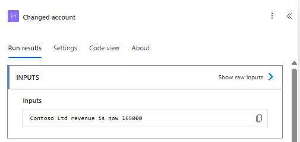

- Power Automate
- Level 3 · Triggers and connectors · 2 of 7
Dataverse triggers and row actions
The Dataverse trigger When a row is added, modified or deleted starts a flow as soon as data changes, with no polling delay. Its power is in two optional boxes most people leave empty: Select columns and Filter rows.
The trigger and its filters
WhatA pushed (webhook) trigger on a table, with optional column and row filters.
WhyWithout filters, every save of any column starts a run: wasted runs and self-triggering loops.
DemoRun only when an account's revenue changes to over 100,000.
Does this change start a run?
A row in Accounts is updated
Change type = Modified?
Was revenue part of the update? (Select columns)
Is the new
revenue gt 100000? (Filter rows)Run the flow
Any “no” and nothing runs: no run, no history.
| Setting | Demo value | Effect |
|---|---|---|
| Change type | Modified | Only updates |
| Table name | Accounts | Which table to watch |
| Scope | Organization | Rows owned by anyone |
| Select columns | revenue | Only when revenue changed |
| Filter rows | revenue gt 100000 | Only when the new value is over 100,000 |
Three edits, one run
What each edit did
| Edit to Contoso Ltd | Select columns | Filter rows | Run? |
|---|---|---|---|
| City changed | no | – | no run |
| Revenue → 50,000 | yes | no | no run |
| Revenue → 165,000 | yes | yes | ran |


concat(triggerOutputs()?['body/name'], ' revenue is now ', string(triggerOutputs()?['body/revenue']))| Piece | What it does |
|---|---|
triggerOutputs()?['body/name'] | The changed row's name: Contoso Ltd. |
string(...['body/revenue']) | The new revenue as text: 165000. |
Row actions you'll use
| Action | Use it to | Key input |
|---|---|---|
| List rows | Query many rows (see OData filter queries) | Filter rows, Select columns |
| Get a row by ID | Read one row you know the ID of | Row ID (a plain GUID) |
| Add a new row | Create a row | Column values; lookups as /table(GUID) |
| Update a row | Change some columns | Row ID + the columns to change |
| Relate rows | Link two rows through a relationship | Both rows and the relationship |
The self-trigger loop, and how to avoid it
Flow triggers on Modified
Flow updates the same row
No Select columns
↺ the update triggers the flow again
Select columns set
Update a column the trigger doesn't watch: no loop
New to this? Start from the basics optional
Webhook trigger: Dataverse tells Power Automate about a change immediately.
Scope: whose rows count: User, Business unit, Parent: child business unit, or Organization.
Common mistakes
- Leaving Select columns empty, so every save starts a run.
- Updating the row the flow triggers on, creating a loop.
- Using display names in Filter rows instead of logical names.